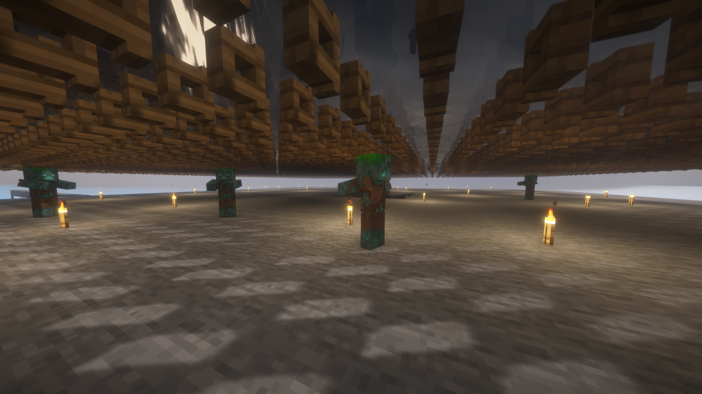
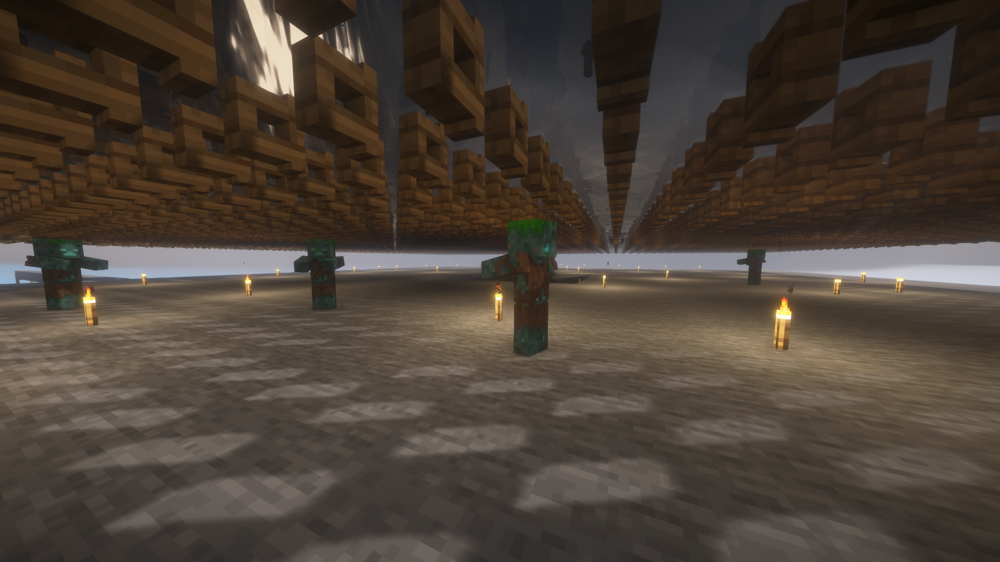
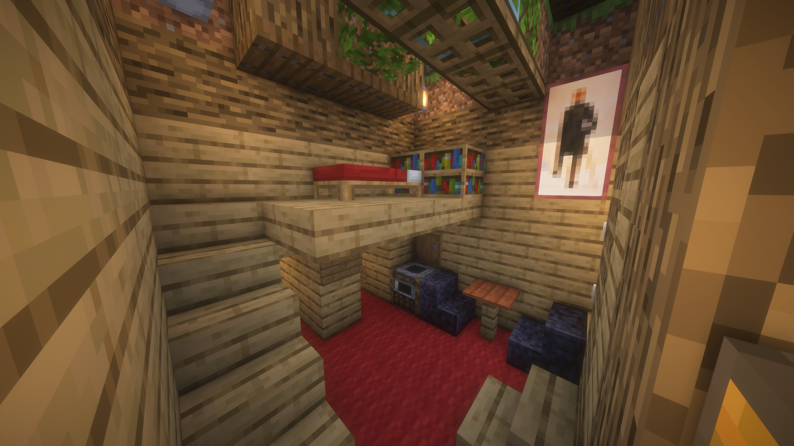
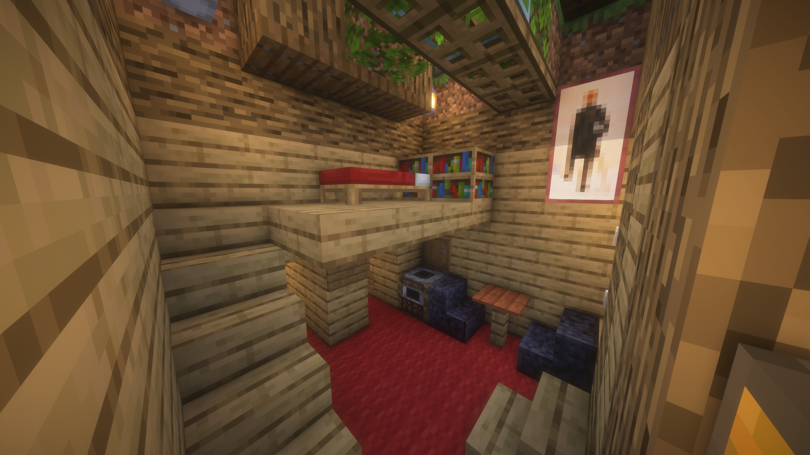

Potato Survival Season 3
Potato Survival Season 3 was undoubtedly the pinnacle of the series. It began on October 27, 2021, and concluded in April 2022.


This season featured a number of record-breaking projects that captivated the community. Among these achievements were the construction of the largest villager trading hall ever seen in the series and the creation of an remarkable number of automatic farms, showcasing ingenuity and creativity.
Villager Trading Hall
Click here to watch on YouTube
Players collaborated tirelessly, pushing the boundaries of what was possible in the game. The season not only highlighted astonishing builds but also created a vibrant community spirit, as players shared their experiences and strategies.
 

Season 3 remains a memorable chapter in the Potato Survival saga, celebrated for its ambitious projects and the camaraderie it inspired among players.

 
